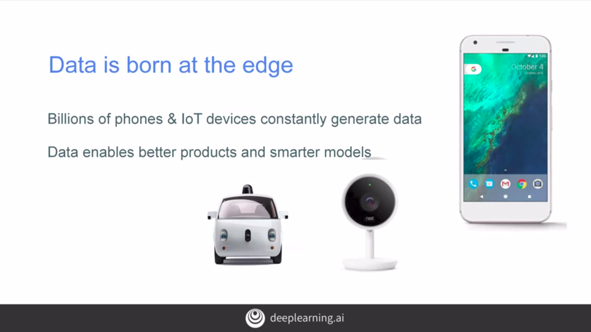
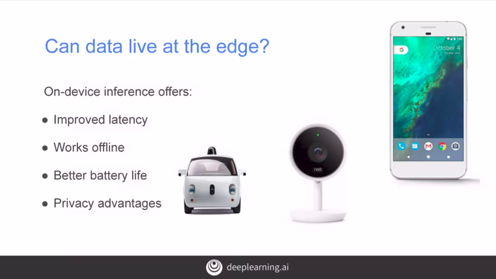
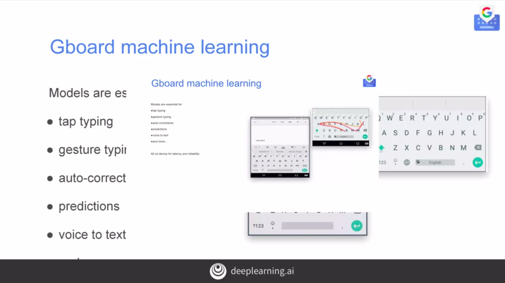
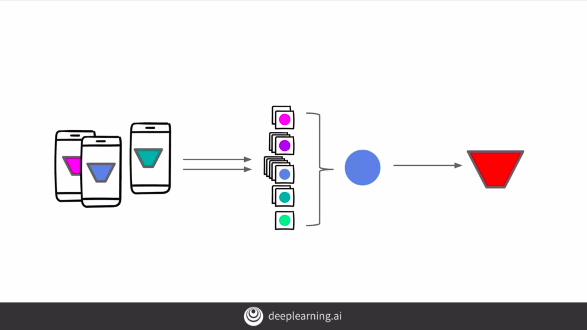
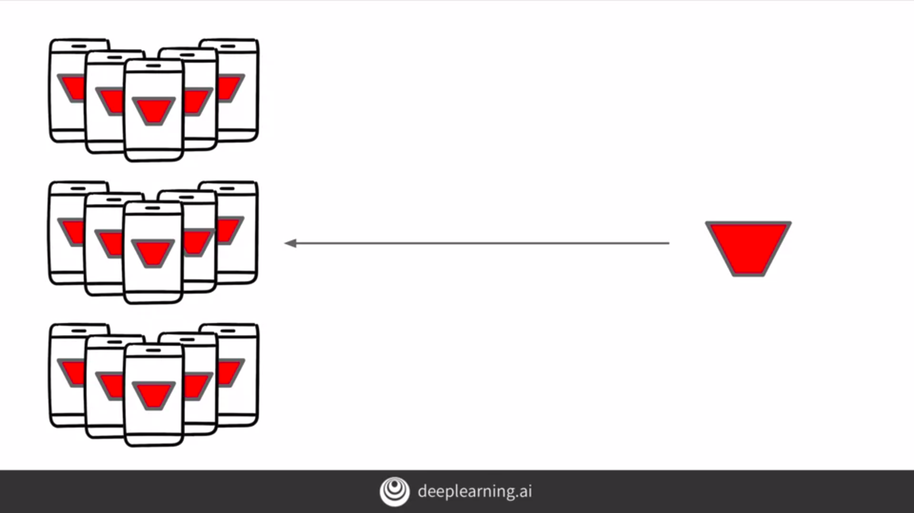
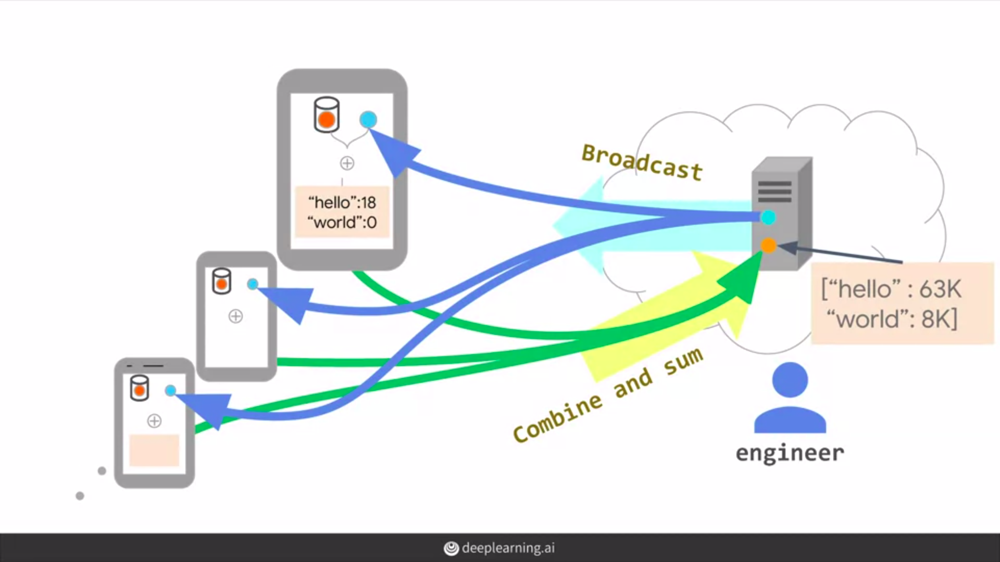

Federated Learning
Very important concept for training models with private data without uploading the user's private data into the cloud.
Data at the edge
If we think about data and mobile devices, realize that there are now billions of these in use around the
world and they're all generating data constantly. Being able to learn from this data can help us to build
better products, at the very least from understanding that usage.

On-device model training and inference
In the world of machine-learned models, this can then be taken to the next level, we can train smarter
models based on the experience of unified data. When it comes to on-device model inference, they're
typically limited to the model that's on the device. A model that can be centrally updated over time, but of
course, at least right now it cannot easily be retrained based on data that's created on that device.

It's still a powerful technology giving things like improved latency, the ability to work offline, which is particularly useful in areas that don't have connectivity, and it can also have a lower impact on battery life as it isn't using network calls to pass data to the Cloud, get an inference, and then download the details of that inference. Of course, there are privacy advantages, the things that we're classifying are predicting that only we know about, you're not sharing those details with a third party.
Advanced approach
Example - Piece of software that we use every day and which can have a huge impact on on-device machine learning, and that's our mobile keyboard. Typing has been found to be about 40 percent lower on a mobile keyboard than on a physical one. So any shortcuts that can be made to make people more productive and faster, while typing on these devices would of course be very welcome.
The Gboard team from Google took on this challenge to use machine learning models, to improve user experience in many areas. For example, using gestures or swipes for typing, having auto-corrections, or perhaps most powerfully to predict what you're going to type next based on the first few characters. Of course, in order to be able to predict the type of things that we're going to type, it has to learn from our previous behavior.

But if everything we type on my keyboard was to be passed up to a Google server, well, we can see the privacy implications. Rest assured they are not passed up to a central server for learning, and instead, they learn locally using Federated Learning Technology, which we're going to see this week.
Have a look at paper here - Talking about the on-device cache of local interactions, touched points, typed text, contexts, and a whole lot more and how this is used only on the device to learn the user's interaction and how examples of the learning and not the data used to generate the learning can be shared across all users.
How does it work?
So how does all of this work? Well, let's consider a simple scenario like this one. We have a population of users each with a mobile device and each with our model running on it. If we want to do some training on these devices, we realize that we are getting them to do something that's computationally expensive. So we can select a subset of them that are available in the sense that they're not currently being used, they're plugged in, and they're charging and they're idle. The principle here is that we don't want to damage the user experience. Of the available ones, some of them will have data that's relevant to the problem we are trying to solve like training to understand the keyboard usage better. So we'll pick a subset of the available devices. These will then receive a training model which can then be retrained on the device and the results of the training, not the data used to perform the training, is sent to the server.

The server then uses this to retrain the master model. Once this is done, the training models are deleted from the mobile devices. New model will deploy to mobile devices.

Before deploying the new model to customers devices, of course, the model should be tested. So we can take a subset for testing the same way as we took a subset for training and deploy a new model to those. Using a process like this and iterating, then over time we can improve the model significantly and the user's personal data never leaves their device. Each device can benefit from the experience of others so the learning is distributed across all users and the term federated is used to describe this.
Now we might wonder what if at the point of the training models being uploaded to the server those models could be reverse engineered to extract user data. There's certainly a risk there. Next, we'll explore how the technology has been designed to prevent this.
Maintaining user’s privacy
Previously, we had an overview of the concepts of federated learning and how a master model could be retrained with distributed users data without the user's data being uploaded to a server where it could potentially be misused. The data always stays on the user's device. At the end of that demonstration, we realized that there is the potential for the retrained models that the user has uploaded to possibly be reverse engineered to get at that data.
So with that in mind, we have two methods that can help ease any fears here.
- The first is that by principle federated learning works only on aggregates
- The second to show how the data can be encrypted by the clients on route to the server.
